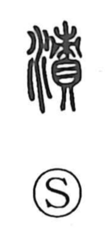

漬

Uncategorized
Kun: tsukeru, tsukaru, hitasu | On: shi
to soak ・ to pickle ・ to steep
Explanation
漬 is a phono-semantic character: the water element (氵) points to liquid and immersion, while 責 functions as the phonetic that supplies the sound. The Shuowen glosses it as hitasu—soaking in water and washing—so from the start it names thorough immersion. By extension it came to mean both soaking and salting to pickle. A classical example makes the figurative sense clear: in the phrase 漸漬於失教, 漸 conveys gradual permeation, while 漬 expresses being fully steeped—depicting how people can be slowly and completely ‘soaked through’ by a corrupting influence.